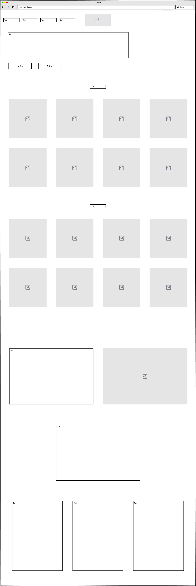
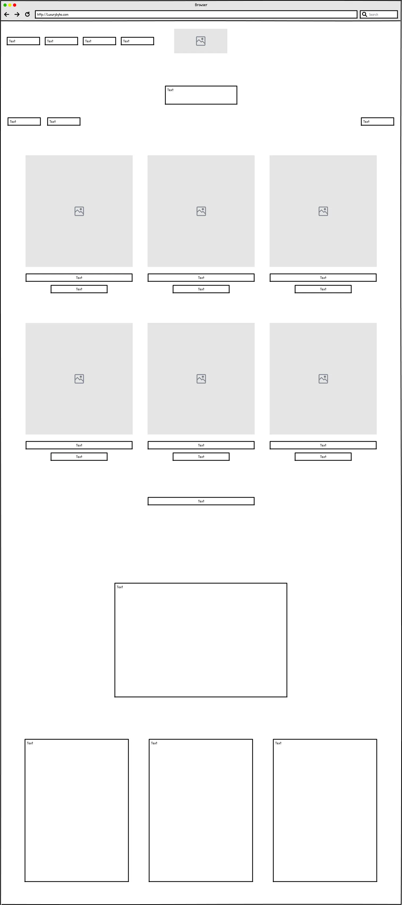
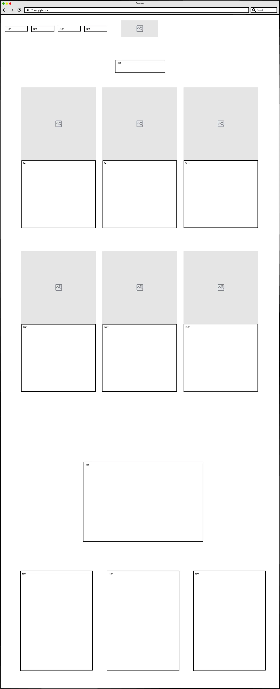
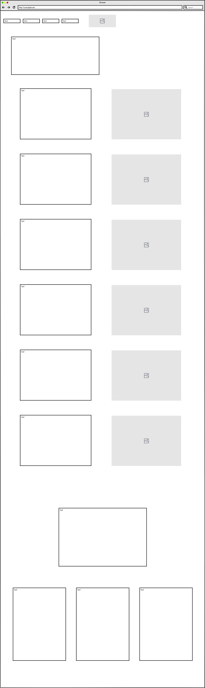

<!--
<!DOCTYPE html>
<html lang="en">

<head>
    <meta charset="UTF-8">
    <meta name="description" content="Portfolio">
    <meta name="viewport" content="width=device-width, initial-scale=1.0">
    <link rel="preconnect" href="https://fonts.googleapis.com">
    <link rel="preconnect" href="https://fonts.gstatic.com" crossorigin>
    <link href="https://fonts.googleapis.com/css2?family=Montserrat&display=swap" rel="stylesheet">
    <link rel="preconnect" href="https://fonts.googleapis.com">
    <link rel="preconnect" href="https://fonts.gstatic.com" crossorigin>
    <link href="https://fonts.googleapis.com/css2?family=Zen+Tokyo+Zoo&display=swap" rel="stylesheet">
    <link rel="apple-touch-icon" sizes="180x180" href="favicon_io (1)/apple-touch-icon.png">
    <link rel="icon" type="image/png" sizes="32x32" href="favicon_io (1)/favicon-32x32.png">
    <link rel="icon" type="image/png" sizes="16x16" href="favicon_io (1)/favicon-16x16.png">
    <link rel="manifest" href="favicon_io (1)/site.webmanifest">
    <link rel="stylesheet" href="css/style.css">
    <link rel="stylesheet" href="css/cfl.css">
    <title>Copenhagen Light Festival</title>
</head>

<body>
    <header>
        <nav class="nav">
            <div class="logo">
                <a href="index.html">LB</a>
            </div>
            <div class="burger-menu">
                <div class="bar"></div>
                <div class="bar"></div>
                <div class="bar"></div>
            </div>
            <ul class="burger-menu-content">
                <li><a href="index.html">HOME</a></li>
                <li><a href="about.html">ABOUT</a></li>
                <li class="active"><a href="work.html">WORK</a></li>
                <li><a href="contact.html">CONTACT</a></li>
            </ul>
            <div class="close-icon">
                <div class="bar"></div>
                <div class="bar"></div>
            </div>
        </nav>
    </header>

    <main>
        <button id="scrollToTopBtn" onclick="scrollToTop()">
            <i class="fas fa-arrow-up"></i>
        </button>
        <div class="tilbage">
            <a href="work.html">&larr;</a>
        </div>

        <div class="grid_1-1">
            <div>
                
            </div>
            <div>
                <h1>Copenhagen Light Festival</h1>
                <h2 class="titel">School Assignment - Redesign</h2>
                <a class="knap"
                    href="https://www.figma.com/file/rf8O7VoZtDLU56M9mBzfae/PROTOTYPE-%2F-NEWSLETTER-%2F-DESIGN-SYSTEM?type=design&node-id=0%3A1&mode=design&t=YasAQqaeA5oiw2nE-1">View
                    Figma prototype</a>
            </div>
        </div>

        <div class="grid_2-2">
            <div class="project">
                <h1>Project overview</h1>
                <p>This project is the first school assignment where we have worked for a client. The project is a
                    redesign for Copenhagen Light Fesival and is based on a number of requirements and ideas from the
                    company. During the project, we created design systems in Figma and used different research methods
                    to develop the best solution. In addition, we have also learned to code with Astro.</p>
            </div>
            <div>
                <h1>My role</h1>
                <p>&rarr; Reserach</p>
                <p>&rarr; UX / UI Design</p>
                <p>&rarr; Coding</p>
            </div>
        </div>

        <div>
            <h1 class="center">Introduction</h1>
            <p>This assignment presents a design system and a digital solution created specifically for Copenhagen Light
                Festival. The aim was to create an online platform that not only informs and engages festival goers, but
                also reflects the essence of CLF's unique atmosphere and attracts a wide spectrum of visitors, from
                locals to tourists and expats.
            </p>
            <p>By exploring user needs and drawing on web design best practices, this assignment analyzes, designs and
                develops a digital solution that offers an intuitive and engaging user experience. </p>
            <p class="space">Problem statement: How can a website for Copenhagen Light Festival be designed so that it
                reflects the festival, meets the
                needs of the users, and is based on best practices within web design.</p>

            <h1 class="center">The Research process</h1>
            <p>For our research, we did interviews and created some HMW's (How might we?)</p>
            <p>Link to<a class="cfl_link"
                    href="https://docs.google.com/document/d/1egDFMcSsfhjhFw0zaTAGU_4GUFewXFZr9ETXc6nwC9c/edit?usp=sharing">
                    Interview guide</a>
            </p>
            <ol>
                <li>How old are you?</li>
                <li>How did you find out about the CPH Light Festival?</li>
                <li>What is most important to you, easily available in relation to information on the website?</li>
                <li>What are 3 things that would capture your interest in the festival? This can e.g. both be
                    advertising, online or out and about
                    Where/how do you want to find information about the various art exhibitions when you move around the
                    light festival?</li>
                <li>What did it take for you to want to sign up for the company's newsletter? - Which newsletters are
                    you already subscribed to and what captured your interest in signing up?</li>
                <li>What is your first impression of the company website?</li>
                <li>How could the navigation on the website be improved?</li>
                <li>What elements do you want to be highlighted on the front page?</li>
                <li>How do you experience the site's user-friendliness compared to sites such as <a class="cfl_link"
                        href="https://www.roskilde-festival.dk/da/">Roskilde Festival</a> or <a class="cfl_link"
                        href="https://sydforsolen.dk/">Syd for Solen</a></li>
            </ol>
            <p class="space">Top 5 takeaways:</p>
            <ol>
                <li>Dates, locations and events should be highlighted and easily accessible immediately.</li>
                <li>Sign or QR code by the works which links to the work on the site with info.</li>
                <li>Sign-up usually works if something is offered to the user - must be attractive.</li>
                <li>Video and light catch the eye on a dark website.</li>
                <li>A simpler menu helps the site's clarity and in general the site must be simplified for the sake of
                    ease of use.</li>
            </ol>

            <p class="space">HMW - How might we?</p>
            <p>Copenhagen Light Festival er en festival for alle, men grundet den brede målgruppe, kan det være svært at
                nå ordentligt ud til alle.
            </p>
            <ol>
                <li>How can we improve user engagement for guests so that they can interact more dynamically with the
                    content on the website?</li>
                <li>How can we showcase the artists' works in a captivating way so that the user can appreciate the
                    works on the website?</li>
                <li>How can we integrate social media more effectively for users so that they can actively participate
                    and share their experiences with others on the website?
                </li>
                <li>How can we improve the search function for visitors so that they can easily find specific
                    information or events on the website?</li>
                <li>How can we ensure a problem-free user experience on all devices, including mobile phones and
                    tablets, so that visitors can access the Copenhagen Light Festival website without technical
                    obstacles?</li>
                <li>How can we clarify Copenhagen Light Festival's purpose and mission on the website, so that visitors
                    can better understand its importance and attract a wider audience?</li>
            </ol>

            <h1 class="center">Product Benchmark</h1>
            <p>For my design process i spend quite a lot of time on my Figma prototype, since this is not at project
                that i have coded. I chose to get rid og the dark colors that are currently usd on the <a
                    class="cfl_link" href="https://luxurybyho.com/">LuxuryByHo</a> site. This included the black header
                + footer and the green color that is used for buttons throughout the site.
            </p>
            <p>To give the site a more clean and refreshing look i decided to keeps the light grey color that the site
                already uses for the main content, but i changed the header to white to give it a brighter look.</p>
            <p class="space">I also chose to make the filter and sort function into at fold down on the site, instead of
                having it on the left side, open constantly.This helps with a more clean look, that is not too cluttered
                by unnecessary buttons and text.</p>
            <p>For my moodboard it is obvious that my vision was to have a grey color palette with with a simple content
                lalyout. For my styletile as well, i chose a thin font and grey icons. Alle buttons are also grey,
                although a very dark grey, but not completely black, as it is a bit easier on the eye. </p>
            <div class="grid_2-2">
                <div>
                    <h3>Moodboard</h3>
                    
                </div>
                <div>
                    <h3>Styletile</h3>
                    
                </div>
            </div>

            <div>
                <h1 class="center">Laying out the content</h1>
                <p>Below are some of the wireframes i created for this project. There are of course a few more pages
                    than this on the website, but some of them are very alike and therefore i have chosen to include
                    only these pages. The pages included are the following: Home, Shop, Product, About us, Blog,
                    Blog-page, Contact and Account</p>
                <div class="grid_4">
                    
                    
                    
                    
                    
                    
                    
                    
                </div>
            </div>

            <div>
                <h1 class="center">The final result</h1>
                <p>I want to maintain the same target group that the company already focuses on. But i wanted to give
                    the wite an update, to give it a more bright and refreshing feel. The current <a class="cfl_link"
                        href="https://luxurybyho.com/">LuxuryByHo</a> page is currently very dark and cluttered. I found
                    it to be a bit overwhelming with all the different functions and the generel layout of the site.
                    Because of this i chose to use a lot of lighter colors, and i tried cleaning up the content of the
                    site a bit by removing certain buttons and functions.</p>
                <p>Some major changes i made were:</p>
                <div class="points">
                    <p>&rarr; Adding an account function for the customers to view orders, returns etc.</p>
                    <p>&rarr; Adding a wishlist function, again for the customers to save products on their accounts
                        wishlist.</p>
                    <p>&rarr; Removed the "Most popular", "Brand" and "Sale" category from the menubar. These can be
                        chosen on
                        the filter function on the shop page.</p>
                </div>
            </div>

            <div class="before_after">
                <div class="navigation-bar">
                    <button class="img_knap" onclick="showImage(1)">Home</button>
                    <button class="img_knap" onclick="showImage(2)">Shop</button>
                    <button class="img_knap" onclick="showImage(3)">Product</button>
                    <button class="img_knap" onclick="showImage(4)">Om os</button>
                    <button class="img_knap" onclick="showImage(5)">Blog</button>
                    <button class="img_knap" onclick="showImage(6)">Kontakt</button>
                </div>

                <div class="image-grid">
                    <div class="image-column">
                        <h2>Before</h2>
                        
                    </div>
                    <div class="image-column">
                        <h2>After</h2>
                        
                    </div>
                </div>
            </div>
    </main>

    <footer>
        <a class="mailto" href="mailto: liv.birkeholm@gmail.com">liv.birkeholm@gmail.com</a>
        <div><a class="linkedin" href="https://www.linkedin.com/in/liv-birkeholm/">// LinkedIn</a>
            <a class="resume" href="https://acrobat.adobe.com/id/urn:aaid:sc:EU:16abb81d-69db-4668-a328-6ddd73c0f880">
                // Resume</a>
        </div>
    </footer>
    <script src="Javascript/burgermenu.js"></script>
    <script src="Javascript/scroll.js"></script>
    <script src="Javascript/img.js"></script>
    <script src="https://kit.fontawesome.com/5e30b57411.js" crossorigin="anonymous"></script>
</body>

</html>
-->